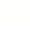
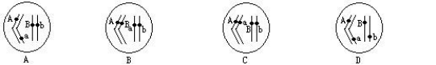
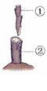

一、选择题
期末摸底考试生物
1、蜻蜓的发育属不完全变态发育，其发育过程比完全变态少了一个什么时期（ ）
A、卵 B、幼虫 C、蛹 D、成虫
2、下列各对性状中，属于相对性状的是（ ）
A 豌豆的黄粒和圆粒 B 玉米的高茎和豌豆的矮茎
c 果蝇的红眼和白眼 D 狗的长毛和卷毛
3、某细胞中有两对基因， 分别位于两对染色体上， 下列图解中正确的是（ ）

4、我国早在 10 世纪，人们就已经采用将轻症天花病人的痘浆接种到健康人身上的方法，来预防天花。这里所说的痘浆和这种方法分别属于（ ）
A.抗体 非特异性免疫 B. 抗体 特异性免疫
C.抗原 非特异性免疫 D. 抗原 特异性免疫
5、下列几种变异中，不能遗传的变异是（ ）
A.人类的皮肤的黑黄白 B.玉米粒的黄白红
C.ABO 血型 D.生长在遮阴处的小麦杆细穗小
6、关于生命的起源，下列叙述正确的是（ ）
①生命起源于非生命的物质 ②生命起源于陆地 ③原始大气的成分主要是水蒸气、氨气、沼气 等 ④现在地球上不可能再形成原始生命
A．①②③ B．①②④ C．①③④ D．②③④二、填空题
7、右图为生产上常用的营养生殖方法中的 方法，其中①是_
8、OTC 的意思是
9、鸡卵的结构中 发育成雏鸟。
10、“黄四娘家花满蹊，千朵万朵压枝低。留连戏蝶时时舞，自在娇莺恰恰啼。”蝴蝶的发育过程 属于 ，试写出蝴蝶的发育过程： 。
11、自 2 月 10 日起，小红和同学们一起开启了线上学习生活。
（1）延迟开学，小红在疫情防控阶段宅在家不出门，如外出，一定要戴好口罩、回家后洗手，这 属于预防传染病流行措施中的 。
13、某生物兴趣小组的同学，对部分家庭的耳垂遗传情况进行调查，下表是他们的调查结果，请分析数据，并结合所学知识回答问题．
（1）表格中所涉及的有耳垂与无耳垂，在遗传学上称为 。
（2）父母有耳垂，而女儿无耳垂，此现象称为 ；
有无耳垂是由 控制，基因是 上具有特定遗传效应的 片段。
（3）根据表中第 组的调查结果可以推断无耳垂是隐形性状．如果控制显性性状的基因用 A表示，控制隐性性状的基因用 a 表示，在第Ⅲ组家庭中，母亲的基因组成是
（4）在第Ⅱ组家庭中，父母都有耳垂，但却出现了无耳垂的子女，这种变异可否遗传？
（5）在第Ⅰ组家庭中的一对夫妇，第 1 个孩子无耳垂，该夫妇再生一个孩子无耳垂的几率是 ，这个孩子是男孩的可能性是 。亲代控制性状的基因是以 为“桥梁”传递给后代 的.